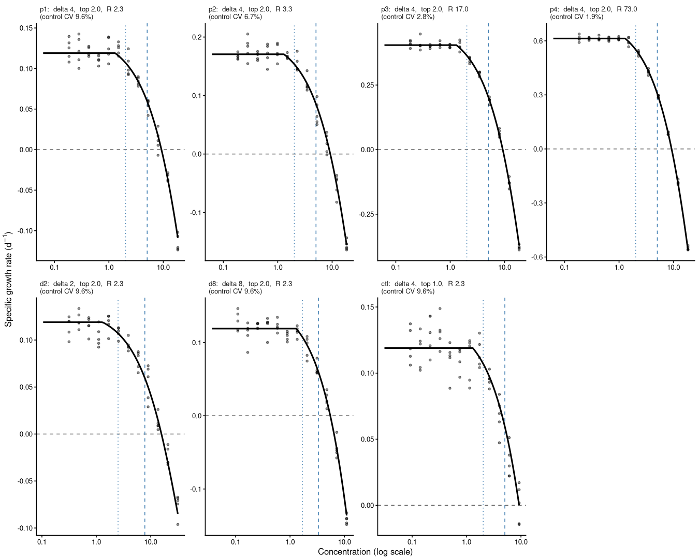
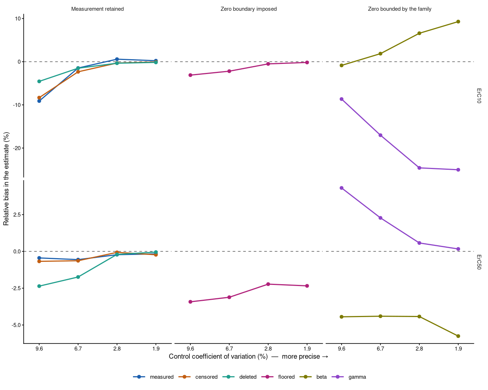
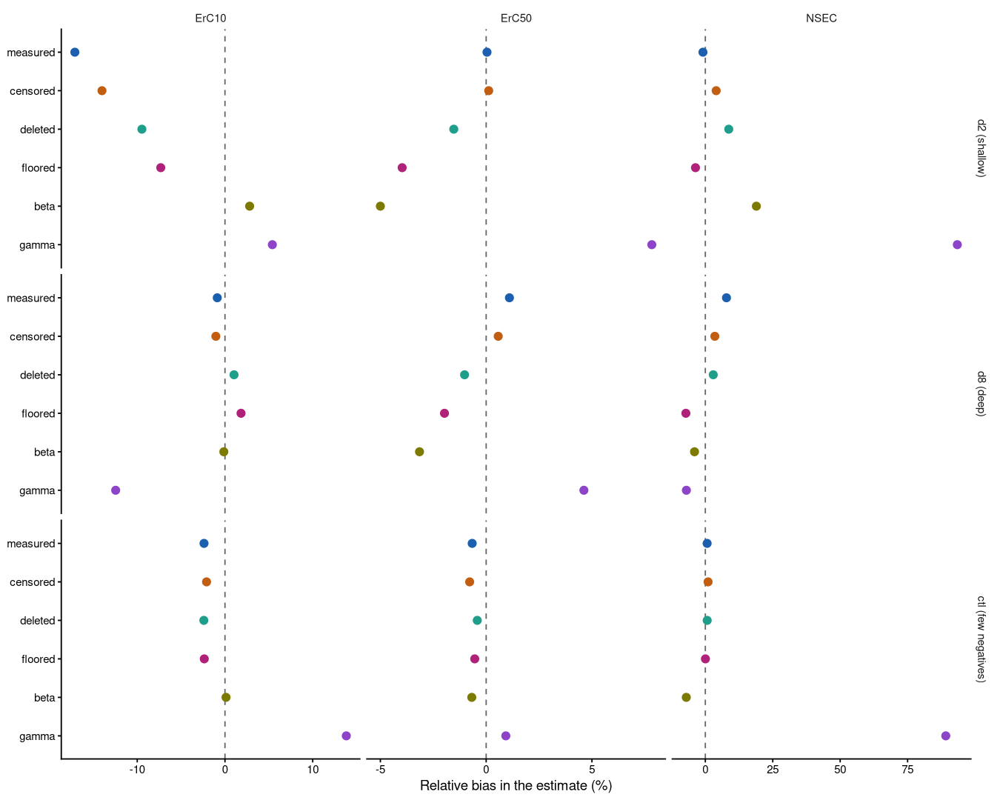
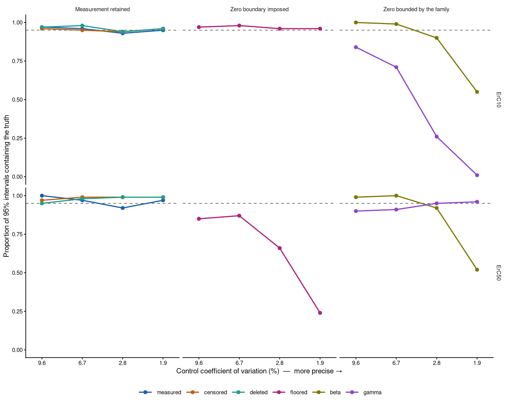
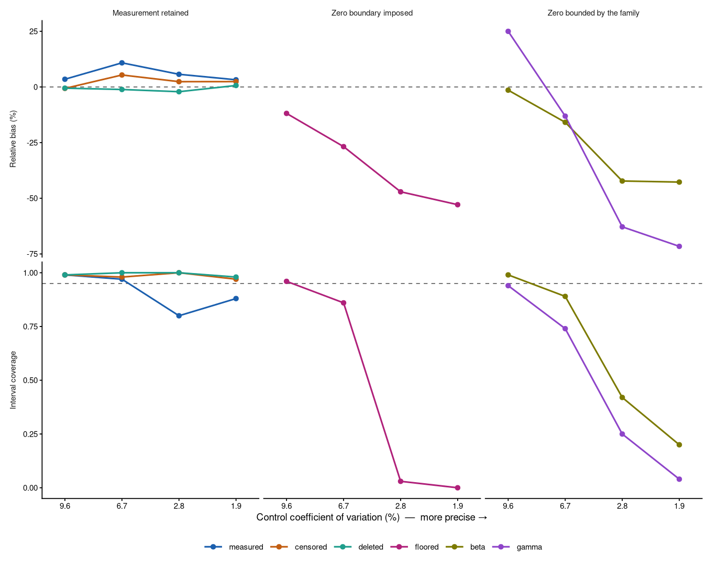

Modelling growth data and other potentially negative response values
Source:vignettes/example7.Rmd
example7.Rmd1 Negative growth rates
Some ecotoxicological responses can legitimately take negative values. Specific growth rate is the most common example: it is a rate of change, and a population that declines over the course of a test has a negative one. Other examples include increments, differences between paired measurements, and any response expressed as a change from a baseline.
Removing those negative values before fitting is standard practice, in this package and in others. The reasons are long-standing and none of them is specific to any one piece of software. A negative value cannot be expressed as a percentage of the control without the percentage exceeding 100. Several commonly used concentration-response equations cannot generate a negative mean at all. And a negative growth rate looks anomalous on a plot, which invites the reader to treat it as an error rather than as a measurement.
The removal is done in one of several ways: by replacing the negative values with zero before fitting, by deleting the rows that hold them, by declaring them censored at zero, or by fitting a response distribution such as a Beta or a Gamma that has no support below zero.
Here we examine what each of those conventions does to the toxicity
estimate that is subsequently reported. Section 2 sets out how the
estimates are defined and why the definition matters when the response
can cross zero. Section 3 sets out what replacing a negative value
commits the analyst to, which is more than an edit to the data. Section
4 records what bayesnec permits, which changed in version
2.2.0. Section 5 reports a simulation study in which the true values are
known, so that each convention can be scored rather than merely
compared. Section 6 applies the same comparison to four real algal
growth tests. Sections 7 and 8 give the recommendations and the
limitations, and Section 9 records the provenance of every figure
quoted.
To run this vignette we will need the following packages.
2 Toxicity estimates and their reference
2.1 Growth rate and the ErCx notation
The subscript r in ErC50 comes from OECD Test Guideline
201 (OECD 2026). In OECD terminology the
endpoint is the measured biological response, and TG 201
defines two of them from the same cell counts and requires both to be
reported. The toxicity estimates derived from each are distinguished by
a subscript naming the endpoint they came from: ErC50 is the EC50 for
the average specific growth rate, the rate constant of
population increase, and EyC50 is the EC50 for the yield, the
biomass increase over the test. For the same data EyC50 is
systematically lower than ErC50, and the guideline requires the growth
rate to be reported because it is the one that does not depend on test
duration.
An ECx or an NSEC is therefore a toxicity estimate, not an endpoint. That distinction matters here because it is the growth rate endpoint, not the toxicity estimate, that can take negative values. Everything below concerns ErCx.
2.2 The ECx reference
bayesnec measures every ECx from the control, which is
the predicted mean at the lowest concentration in the supplied
predictor, taken per posterior draw. The type argument
names what the percentage is measured towards:
"absolute", the default, measures from the control to zero;
"relative" measures from the control to the equation’s
lower asymptote; "range" measures from the control to the
lowest response the curve predicts; and "direct" reads the
concentration off a nominated response value. See ?ecx for
the full definitions.
type = "absolute" is the definition TG 201 uses. A 50%
effect means the growth rate has been halved relative to the control,
and a 100% effect means growth has stopped altogether. Two consequences
follow for a response that can go negative. Zero growth is 100% effect
for every dataset, whatever the control growth rate, so a curve whose
lower asymptote is negative descends past 100% effect and keeps going.
And effects above 100% are meaningful and are not truncated:
ecx_val is not capped, because 120% inhibition of a growth
rate is a rate of -0.2 times the control, which is a real measurement on
an unbounded response and is what TG 201 reports.
ErC10 and ErC50 themselves never lie below zero. They require the response to be 90% and 50% of the control respectively, both strictly positive, so the negative part of the curve can only affect them indirectly, by changing the shape of the fitted curve through the high-concentration observations. That indirect route is what the rest of this vignette quantifies.
We do not normalise to the control anywhere here. The absolute ECx already expresses the effect relative to the fitted control response, so dividing the data by the control mean beforehand would apply the same correction twice and would additionally distort the error structure (Ritz et al. 2026).
2.3 The NSEC
The NSEC is the no-significant-effect-concentration of Fisher and Fox (2023): the concentration at
which the modelled mean response first becomes statistically
indistinguishable from the modelled control response.
bayesnec takes a lower quantile of the control posterior —
by default the 1st percentile, controlled by sig_val — and
finds where each posterior draw of the curve crosses it. It is one of
the estimates recommended for guideline derivation under the current
Australian and New Zealand technical guidance (Warne et al. 2025); see Fisher et al. (2023) for its relationship to the
NEC.
The NSEC depends on the width of the control posterior, and this
determines how the results below have to be read. It is a property of
the metric rather than a defect of any fitting approach. A noisier
experiment produces a wider control posterior, hence a lower reference
value, hence a crossing further to the right. As the residual error
tends to zero the reference converges on the control mean, and for an
equation that includes a nec parameter the NSEC converges
on nec itself. The true nec is therefore the
NSEC’s limiting value, not its expected value at any finite level of
noise.
3 Flooring and the response distribution
Replacing a negative growth rate with zero is not only an edit to the data. It asserts that the response cannot be negative, which is a statement about the response distribution, and the rest of the analysis has to be made consistent with it.
No available family represents that assertion exactly. A floored
response has a point mass at zero, and the distributions available for a
non-negative continuous response exclude zero itself: a Beta is defined
on the open interval (0, 1) and a Gamma on the open interval (0,
infinity). The floored values therefore sit outside the support of the
family the flooring implies. A distribution that does represent a
continuous non-negative response with a point mass at zero — a Tweedie,
for instance — is not available natively in brms.
bayesnec accommodates this by moving the values inside
the support. check_data() shifts an exact zero to one tenth
of the smallest positive value, and an exact one to
1 - 0.001. This has always been the behaviour and it is
unchanged. Since version 2.2.0 bnec() reports each
substitution once, naming the number of rows, the value substituted, the
reason, and the family that would represent a genuine zero rather than
move it. The accommodation is a device for making an inconsistent
specification runnable, not a model of the response.
Substituting zeros and choosing a bounded family are therefore the
same practice at different stages, which is why this vignette does not
treat them as alternatives. The floored convention below
replaces the negative values and leaves the family unbounded; the
beta and gamma conventions make the same
assertion through the family as well.
Two cases are outside this argument. A row whose value was never recorded, because the population fell below a counting limit, is a censored observation rather than a floored one, and is exempt from the substitution. And a response that is genuinely zero because the population died is a different process again, which the hurdle and zero-inflated families are designed for; see the Hurdle and zero-inflated models vignette. Those families are not a remedy for a substituted negative.
4 Zero-asymptote equations under a Gaussian family
The interval a response distribution allows the mean to occupy is a property of the distribution and not of the link. A Gaussian mean is unconstrained: the data enter the likelihood only through the residual, so a negative fitted mean is an ordinary prediction rather than an invalid one.
From version 2.2.0 the six declining equations whose lower asymptote
is fixed at zero — nec3param, ecxexp,
ecxsigm, ecxwb1p3, ecxwb2p3 and
ecxll3 — are retained under a Gaussian family, and an
absolute ECx is reported for them. Earlier versions dropped them, on the
grounds that they cannot generate a negative prediction, and refused an
absolute ECx for a Gaussian fit without a bot parameter.
Both restrictions have been removed (#206). The declining candidate set
that bnec() fits by default under a Gaussian family is
therefore fourteen equations rather than eight.
models()$decline
#> [1] "nec3param" "nec4param" "neclin" "ecxlin" "ecxexp" "ecxsigm"
#> [7] "ecx4param" "ecxwb1" "ecxwb2" "ecxwb1p3" "ecxwb2p3" "ecxll5"
#> [13] "ecxll4" "ecxll3"The practical effect is that the curve shape TG 201 and Ritz et al. (2026) both describe for algal
growth-rate data — a lower asymptote fixed at zero, representing
complete inhibition — can be fitted directly, on the measurements as
recorded, and can be weighed against the free-asymptote shapes by the
same model averaging that bayesnec applies to everything
else. Choosing that shape is now a matter of evidence rather than of
specification. Replacing the measurements remains a decision about the
data, and the sections that follow are about the second of them.
5 Simulation study
Real datasets can show that the conventions disagree, but not which
of them is right, because the true toxicity of a real substance is
unknown. We therefore make the comparison on simulated data, where the
true ErC10, ErC50 and nec are known by construction and
each convention can be scored against them.
5.1 The conventions compared
We compare six conventions, distinguished only by what is done to the data before fitting and which response distribution is then used.
| name | what the analyst does |
|---|---|
measured |
use the growth rates as recorded |
censored |
declare each negative value left-censored at zero |
deleted |
delete the rows holding a negative value |
floored |
replace each negative value with zero |
beta |
floor, scale the response to (0, 1], fit a Beta |
gamma |
floor, fit a Gamma |
Every convention then calls bnec() with package
defaults: the default priors derived from its own prepared data, the
default declining candidate set for its family, and the default model
averaging over that set — pseudo-BMA with a Bayesian bootstrap, which is
what bnec() uses when loo_controls is not
supplied. No convention is handed a prior or an equation chosen by
another. The contrast between two conventions is therefore the contrast
a practitioner would obtain by following the convention through, not a
likelihood-only contrast with everything else held artificially
fixed.
That is a change of question from an earlier version of this study,
which held the equation fixed at nec4param so that any
difference could be attributed to the treatment of the data alone.
Holding the equation fixed answers a question about the likelihood; it
does not answer the question a reader has, which is what happens to the
number they will report. Fitting the candidate set also removes an
artefact of the fixed design: on altered data a fixed
nec4param is no longer the equation that generated them, so
part of what it measured was misspecification the convention did not
cause.
The measured convention uses the growth rates exactly as
recorded, with the lower asymptote left free wherever the equation has
one. It is the reference for everything below.
The censored convention declares each negative value as
censored at zero: the model is told the observation lies at or below
zero, without being told what it was. This is the option available when
the negative values were never recorded. It also changes which
observations constrain the mean the most, because a censored row
contributes the probability that the response lies at or below the bound
rather than a density. See the Censoring section of the Single
model usage vignette.
dat_censored <- dat |>
mutate(cens = ifelse(y < 0, "left", "none"),
y = ifelse(y < 0, 0, y))
bnec(y | cens(cens) ~ crf(x, "decline"), data = dat_censored,
family = gaussian(link = "identity"))The deleted convention drops the rows holding a negative
value and analyses what is left unchanged. Nothing false is asserted
about any observation that is kept, but the replication per
concentration changes, and at the top of the series a whole treatment
group can disappear.
The floored convention replaces every negative growth
rate with zero and leaves the model unchanged.
dat_floored <- mutate(dat, y = pmax(y, 0))
bnec(y ~ crf(x, "decline"), data = dat_floored,
family = gaussian(link = "identity"))The beta convention divides the floored response by its
maximum so that it lies in (0, 1] and fits a Beta. Dividing by the
maximum is how these data have been prepared in the work this vignette
draws on; dividing by the control mean is at least as common elsewhere,
and Ritz et al. (2026) set out why neither
should be done before fitting.
dat_beta <- dat |>
mutate(y = pmax(y, 0)) |>
mutate(y = y / max(y))
bnec(y ~ crf(x, "decline"), data = dat_beta, family = Beta(link = "identity"))The gamma convention applies no scaling and fits a Gamma
to the floored response.
The zeros that flooring creates are shifted off the boundary by
check_data(), as described in Section 3, and that shift is
part of the convention under test rather than something the study
pre-empts. Dividing by the maximum does not affect the reported toxicity
estimates: ecx(type = "absolute") solves
f(x) = control * (1 - x/100), so a positive scaling of the
response applies to both sides and the concentration at which the curve
meets the target is unchanged. What the family changes is the fitted
curve, not the definition of the estimate.
The candidate set differs between families, because the declining set is filtered by what each family’s support allows. Under a Gaussian family it is the fourteen equations listed in Section 4; under a Beta and under a Gamma it is twelve.
5.2 Design
The data are generated from nec4param, an equation that
is in every Gaussian convention’s candidate set, so that the generating
shape is available to be recovered and the weight it receives is itself
informative.
nec4param_curve <- function(x, top, bot, beta, nec) {
bot + (top - bot) * exp(-exp(beta) * (x - nec) * (x >= nec))
}The truth is parameterised so that the two experimental factors are
explicit. The control growth rate is set by the control fold-change
R, the factor by which the control population multiplies
over a test of length t. The depth of the lower asymptote
is set as a multiple delta of that control rate, so at
delta = 2 the population declines twice as fast at the
highest concentrations as it grows in the control. The three levels
used, delta = 2, 4 and 8, span the range measured on the
real datasets.
sim_truth <- function(R = 2.3, delta = 4, t = 7, nec = 1.3, beta = -3.573) {
mu_0 <- log(R) / t # true control growth rate
bot <- -delta * mu_0 # lower asymptote, delta x deeper than top
list(R = R, delta = delta, t = t, top = mu_0, bot = bot,
beta = beta, nec = nec,
# where the true curve crosses zero growth
zero_crossing = nec + log((1 + delta) / delta) / exp(beta))
}The design is a geometric concentration series spanning a factor of
one hundred, with ten controls and five replicates at each of twelve
concentrations (n = 70), matching the real designs. The position of the
highest concentration is the second factor, expressed as a multiple
top_factor of the concentration at which the true curve
crosses zero. At top_factor = 1.0 the series stops exactly
at the crossing and about one design point in fourteen has a
non-positive true mean; at 2.0 it runs well past, and one
in seven does. This factor determines how much negative data there is
for a convention to act on.
sim_design <- function(truth, top_factor = 1, n_conc = 12, n_rep = 5,
n_control = 10, span = 100) {
x_max <- top_factor * truth$zero_crossing
concs <- exp(seq(log(x_max / span), log(x_max), length.out = n_conc))
data.frame(x = c(rep(0, n_control), rep(concs, each = n_rep)))
}The residual scale is constant along the curve, and the fits are
homoscedastic to match, so that no convention is misspecified in its
variance and the mean structure is the only thing under test. An earlier
version of this study generated the residual scale rising 8.1-fold from
the control to the lower asymptote, a figure described as calibrated
from the real data. Re-measured on alga as the within-dose
standard deviation against position on the curve, with substituted rows
excluded, only one of the four datasets shows a gradient at all
(c_proliferum, fitted ratio 14.1, slope p < 0.001; the
other three 1.2 to 1.5, p > 0.35). Generating every cell
heteroscedastic asserted as general something seen in one dataset, and
made every convention misspecified in the same way, which is a confound
shared by the whole comparison rather than a feature of it.
sim_sigma <- function(x, truth, sigma_0_abs) rep(sigma_0_abs, length(x))
simulate_dataset <- function(truth, design, sigma_0_abs, seed = NULL) {
if (!is.null(seed)) set.seed(seed)
mu <- nec4param_curve(design$x, truth$top, truth$bot, truth$beta, truth$nec)
data.frame(x = design$x,
y = rnorm(length(mu), mu, sim_sigma(design$x, truth, sigma_0_abs)))
}The control residual standard deviation is held at a fixed absolute
value, anchored so that it corresponds to a 9.6% coefficient of
variation at R = 2.3, rather than at a fixed coefficient of
variation. Under a fixed coefficient of variation the generating model
is exactly scale-equivariant in the growth rate, so changing
R would change nothing that is reported. Holding the
absolute error fixed instead means that raising R raises
the signal and leaves the noise alone, which makes R a
measurement-precision axis.
sigma_0_abs <- 0.096 * log(2.3) / 7 # absolute control SD, anchored at R = 2.3The design is seven cells. Four of them, p1 to
p4, hold delta = 4 and top_factor
= 2.0 and raise R, giving four levels of measurement
precision at an otherwise identical design and truth. Two more,
d2 and d8, change how far the true curve
descends below zero. The seventh, ctl, stops the
concentration series at the zero crossing, so that the conventions have
almost nothing to act on. Each cell was simulated 100 times and every
simulated dataset was analysed by all six conventions, giving 7 x 100 x
6 = 4,200 model-averaged fits and 52,533 individual equation fits.
Sampling used four chains of 4,000 iterations with 2,000 warmup,
adapt_delta = 0.99 and max_treedepth = 12.
Every fit is retained in the summaries: no unit failed and no estimate
was unidentified.
cells <- data.frame(
cell = c("p1", "p2", "p3", "p4", "d2", "d8", "ctl"),
delta = c(4, 4, 4, 4, 2, 8, 4),
top_factor = c(2, 2, 2, 2, 2, 2, 1),
R = c(2.3, 3.3, 17, 73, 2.3, 2.3, 2.3)
)
cell_detail <- function(s) {
tr <- sim_truth(R = s$R, delta = s$delta)
dz <- sim_design(tr, top_factor = s$top_factor)
mu <- nec4param_curve(dz$x, tr$top, tr$bot, tr$beta, tr$nec)
true_ecx <- function(p) {
target <- tr$top * (1 - p / 100)
tr$nec + log((tr$top - tr$bot) / (target - tr$bot)) / exp(tr$beta)
}
data.frame(top = tr$top, bot = tr$bot, x_max = max(dz$x),
ErC10 = true_ecx(10), ErC50 = true_ecx(50),
cv_control = sigma_0_abs / tr$top,
# tolerance, not `<= 0`: at top_factor = 1 the highest design point
# sits exactly on the crossing, so a strict test flips on floating
# point and reports 0 for some cells and 1/14 for others
prop_negative = mean(mu <= 1e-10))
}
cells <- cbind(cells, do.call(rbind, lapply(seq_len(nrow(cells)),
function(i) cell_detail(cells[i, ]))))| Cell | delta | top factor | R | top | bot | max conc. | true ErC10 | true ErC50 | control CV | prop. negative |
|---|---|---|---|---|---|---|---|---|---|---|
| p1 | 4 | 2 | 2.3 | 0.119 | -0.476 | 18.5 | 2.02 | 5.05 | 0.096 | 0.143 |
| p2 | 4 | 2 | 3.3 | 0.171 | -0.682 | 18.5 | 2.02 | 5.05 | 0.067 | 0.143 |
| p3 | 4 | 2 | 17.0 | 0.405 | -1.619 | 18.5 | 2.02 | 5.05 | 0.028 | 0.143 |
| p4 | 4 | 2 | 73.0 | 0.613 | -2.452 | 18.5 | 2.02 | 5.05 | 0.019 | 0.143 |
| d2 | 2 | 2 | 2.3 | 0.119 | -0.238 | 31.5 | 2.51 | 7.79 | 0.096 | 0.143 |
| d8 | 8 | 2 | 2.3 | 0.119 | -0.952 | 11.0 | 1.70 | 3.34 | 0.096 | 0.143 |
| ctl | 4 | 1 | 2.3 | 0.119 | -0.476 | 9.2 | 2.02 | 5.05 | 0.096 | 0.071 |
Three features of Table 1 matter for the results below. The true
ErC10 and ErC50 depend only on delta, so p1 to
p4 share one estimand and differ only in how precisely it
can be measured. The proportion of negative true means is one in seven
in every cell except ctl, where it is one in fourteen; in
the realised datasets that is about 10 negative observations out of 70,
against about 2 in ctl. And the control coefficient of
variation falls from 9.6% to 1.9% across p1 to
p4, which is the sweep the rest of the section is built
on.
curve_data <- do.call(rbind, lapply(seq_len(nrow(cells)), function(i) {
s <- cells[i, ]
tr <- sim_truth(R = s$R, delta = s$delta)
xx <- seq(0, s$x_max, length.out = 300)
data.frame(cell = s$cell, x = xx,
mu = nec4param_curve(xx, tr$top, tr$bot, tr$beta, tr$nec))
}))
point_data <- do.call(rbind, lapply(seq_len(nrow(cells)), function(i) {
s <- cells[i, ]
tr <- sim_truth(R = s$R, delta = s$delta)
d <- simulate_dataset(tr, sim_design(tr, s$top_factor), sigma_0_abs,
seed = 42 + i)
data.frame(cell = s$cell, d)
}))
# Panels in design order -- the precision sweep first, then the cells that change
# the truth or the design -- rather than alphabetically.
cell_levels <- c("p1", "p2", "p3", "p4", "d2", "d8", "ctl")
cells$cell <- factor(cells$cell, levels = cell_levels)
curve_data$cell <- factor(curve_data$cell, levels = cell_levels)
point_data$cell <- factor(point_data$cell, levels = cell_levels)
lab <- setNames(
sprintf("%s: delta %g, top %.1f, R %.1f\n(control CV %.1f%%)",
cells$cell, cells$delta, cells$top_factor, cells$R,
100 * cells$cv_control),
levels(cells$cell))
# controls sit at x = 0 and have no position on a log axis, so they are dropped
# from this figure; every fit uses them
ggplot(subset(point_data, x > 0), aes(x = x, y = y)) +
geom_hline(yintercept = 0, linetype = "dashed", colour = "grey40") +
geom_vline(data = cells, aes(xintercept = ErC10),
linetype = "dotted", colour = "steelblue") +
geom_vline(data = cells, aes(xintercept = ErC50),
linetype = "dashed", colour = "steelblue") +
geom_point(alpha = 0.45, size = 0.8) +
geom_line(data = subset(curve_data, x > 0), aes(y = mu), linewidth = 0.7) +
facet_wrap(~ cell, scales = "free", ncol = 4,
labeller = labeller(cell = lab)) +
scale_x_log10() +
labs(x = "Concentration (log scale)",
y = expression("Specific growth rate ("*d^-1*")")) +
theme_classic(base_size = 8) +
theme(panel.spacing = unit(0.35, "lines"),
plot.margin = margin(2, 4, 2, 2),
strip.background = element_blank(), strip.text = element_text(hjust = 0))
Figure 1. The seven simulated cells. Points are one simulated dataset per cell; the solid line is the true curve; the dashed horizontal line is zero growth. Vertical lines mark the true ErC10 (dotted) and ErC50 (dashed). Panels are labelled with the cell name, its design factors and the control coefficient of variation it realises.
5.3 ErC10 and ErC50
Relative bias is the mean of the estimated value minus the true value, over the 100 realisations of a cell, expressed as a percentage of the true value. The precision sweep is the most informative comparison in the study, because it distinguishes the two things that can make an estimate wrong: estimation error shrinks as an experiment becomes more precise, and model misspecification does not.
bias_plot <- function(d, ests) {
ggplot(subset(d, estimate %in% ests),
aes(x = cv_f, y = rel_bias, colour = arm, group = arm)) +
geom_hline(yintercept = 0, linetype = "dashed", colour = "grey40") +
geom_line(linewidth = 0.7) +
geom_point(size = 1.8) +
# One label per series at the right-hand edge rather than a key: the label
# sits on the line it names, which is the secondary encoding the palette
# note above depends on.
scale_x_discrete(expand = expansion(add = c(0.4, 0.4))) +
facet_grid(estimate ~ handling, scales = "free_y") +
labs(x = "Control coefficient of variation (%) — more precise →",
y = "Relative bias in the estimate (%)") +
scale_colour_manual(values = arm_cols, breaks = arm_levels) +
guides(colour = guide_legend(nrow = 1)) +
theme_classic(base_size = 9) +
theme(strip.background = element_blank(), legend.position = "bottom",
legend.title = element_blank(), legend.key.width = unit(1.4, "lines"))
}
bias_plot(precision, c("ErC10", "ErC50"))
Figure 2. Relative bias in the estimated ErC10 and ErC50 against the control coefficient of variation, which decreases to the right as the experiment becomes more precise. Each point summarises 100 simulated datasets. The dashed line is zero bias.
The three conventions that retain the measurement converge on the
true ErC50. Across p1 to p4 the bias of
measured runs from -0.5% to -0.2%, censored
from -0.7% to -0.2%, and deleted from -2.4% to -0.1%. All
three are within half a per cent of the truth at the highest precision
tested.
Flooring does not converge. Its ErC50 bias falls from -3.4% to -2.3%
and then stops, and the Beta holds between -4.4% and -5.8% throughout.
Both make the substance appear more toxic than it is. The residual bias
is smaller than the 8 to 15% reported for the same conventions under a
fixed nec4param, and the reason is Section 4: the enlarged
candidate set now contains the zero-asymptote shapes that floored data
resemble, and averaging over them absorbs part of the distortion. It
does not absorb all of it.
The Gamma converges on ErC50 and is the worst of the six on ErC10. Its ErC50 bias falls from 4.3% to 0.2% across the sweep, while its ErC10 is displaced by -8.7% at the noisiest and -25.0% at the most precise — it gets worse as the experiment improves, which is the signature of misspecification rather than of estimation error.
The reason is in the variance rather than in the mean, and a posterior predictive check locates it. These data are generated with a residual standard deviation that is constant along the curve, so what a correctly specified family should predict is known exactly: the generated value at every concentration, and therefore a ratio of one between the predicted spread at the control and at the highest concentration. Each fit of the four precision cells was refitted and its model-averaged predicted spread compared with the generated one, 100 realisations per cell and convention.
measured is correctly specified by construction, so what
it returns is the closest this statistic comes to one on these data and
the reference every other convention is read against: a control ratio of
1.00 to 0.98, with 95% of realisations between 0.81 and 1.18, and a
gradient of 1.03.
An identity-link Gamma cannot reproduce a constant spread, because it ties the residual standard deviation to the mean. It over-states the spread at the control by a factor of 2.51 to 2.69, and its gradient runs from 181 at the noisiest cell to 90 at the most precise, against a true value of one. The floored block is therefore given almost all of the weight in the likelihood and the control scatter almost none, and the shoulder — which is where a 10% decline is read — is what gives way.
That also locates what flooring does and does not damage. Under a
Gaussian family the floored data are described by a correctly specified
variance model: floored returns a control ratio of 0.91 to
1.12 and a gradient of 1.04, both inside the reference. What the
substitution changes is the mean structure, which is what Section 5.6
reports. Under a Gamma the two failures compound.
The Beta is a third case. Its control ratio is 1.09 to 1.10, inside the reference, and its gradient 1.71 to 2.66 — a mild departure rather than the Gamma’s. Whatever displaces its ErC10 is therefore not the variance model.
The Gamma’s intervals are 2.14 times as wide as those of
measured on ErC50, which is what keeps its ErC50 coverage
nominal while its point estimate for ErC10 is a fifth low.
The Beta is displaced in the other direction on ErC10, from -0.9% at the noisiest to 9.3% at the most precise. Its bias grows as the experiment improves, which is the signature of misspecification rather than of estimation error.
ggplot(design_cells, aes(x = rel_bias, y = arm, colour = arm)) +
geom_vline(xintercept = 0, linetype = "dashed", colour = "grey40") +
geom_point(size = 2.2) +
# estimate on the columns, not the rows: facet_grid frees a scale per column,
# and the three estimates are on scales that differ by an order of magnitude,
# so sharing one x axis across them would hide everything but the NSEC.
facet_grid(cell ~ estimate, scales = "free_x") +
scale_y_discrete(limits = rev(arm_levels)) +
labs(x = "Relative bias in the estimate (%)", y = NULL) +
scale_colour_manual(values = arm_cols, guide = "none") +
theme_classic(base_size = 9) +
theme(strip.background = element_blank(), legend.position = "none")
Figure 3. Relative bias in the three cells that change
the truth or the design rather than the measurement precision, all at a
control coefficient of variation of 9.6%. d2 and
d8 change how far the true curve descends below zero;
ctl stops the concentration series at the zero crossing,
leaving about two negative observations in seventy for a convention to
act on.
How far the curve descends below zero changes the size of the effect
but not its direction. Between d2 and d8 the
ErC50 bias of floored is -4.0% and -2.0%, and of
beta -5.0% and -3.1%, against 0.0% and 1.1% for
measured.
The ctl cell is the one that tells a reader whether any
of this applies to their data. Its concentration series stops at the
zero crossing, so a realised dataset holds about two negative
observations rather than ten, and the four Gaussian conventions then
span 0.4 percentage points of ErC50 bias between them, against 3.0 in
p1, which has the same control variability and four times
as many negative observations. Where essentially none of the
observations are at or below zero growth, the choice of convention does
not change the reported value.
5.4 Credible interval coverage
Coverage is the proportion of the 100 realisations whose 95% credible interval contains the true value. It is reported here alongside the mean interval width, because a wide interval and an accurate one both achieve nominal coverage and they are not the same result.
cov_plot <- function(d, ests) {
ggplot(subset(d, estimate %in% ests),
aes(x = cv_f, y = coverage, colour = arm, group = arm)) +
geom_hline(yintercept = 0.95, linetype = "dashed", colour = "grey40") +
geom_line(linewidth = 0.7) +
geom_point(size = 1.8) +
scale_x_discrete(expand = expansion(add = c(0.4, 0.4))) +
scale_y_continuous(limits = c(0, 1)) +
facet_grid(estimate ~ handling) +
labs(x = "Control coefficient of variation (%) — more precise →",
y = "Proportion of 95% intervals containing the truth") +
scale_colour_manual(values = arm_cols, breaks = arm_levels) +
guides(colour = guide_legend(nrow = 1)) +
theme_classic(base_size = 9) +
theme(strip.background = element_blank(), legend.position = "bottom",
legend.title = element_blank(), legend.key.width = unit(1.4, "lines"))
}
cov_plot(precision, c("ErC10", "ErC50"))
Figure 4. Proportion of 95% credible intervals containing the true ErC10 or ErC50, against the control coefficient of variation. The dashed line is nominal coverage.
The three retaining conventions hold nominal coverage across the
sweep. At the highest precision measured contains the true
ErC50 in 0.97 of the 100 realisations, censored in 0.99 and
deleted in 0.99.
Flooring loses coverage as the experiment improves, from 0.85 to 0.24 on ErC50, and the Beta from 0.99 to 0.52. This is the practical consequence of a bias that does not converge. The interval narrows around a centre that stays displaced, so a laboratory that improves its technique, adds replicates and reduces its control variability will, if it floors its negative values, produce an analysis that is more confident and no less wrong. The Gamma’s ErC10 shows the same failure more sharply, falling from 0.84 to 0.01.
Interval width is what keeps this from being read the other way
round. At the highest precision floored has an ErC50
interval 1.47 times as wide as that of measured and covers
the truth a quarter of the time, while gamma has one 2.14
times as wide and covers it at the nominal rate. Neither coverage nor
width should be reported without the other.
5.5 The NSEC
ErC10 and the NSEC are the two estimates commonly used as a no-effect
value, and the conventions do not affect them in the same way. As
Section 2.3 sets out, the true nec is the NSEC’s limiting
value as the residual error goes to zero rather than its expected value
at any finite noise, so the sweep rather than any single cell is what
identifies an approach: a correctly specified one sits on the truth and
stays there as the experiment improves, and a misspecified one departs
further the more precise the experiment becomes.
# Bias and coverage in one figure, as two rows of a facet rather than two plots
# stacked by a layout package: the reference line differs between the rows, so
# it is supplied as data rather than as a constant.
nsec_long <- subset(precision, estimate == "NSEC") |>
select(arm, handling, cv_f, `Relative bias (%)` = rel_bias,
`Interval coverage` = coverage) |>
pivot_longer(c(`Relative bias (%)`, `Interval coverage`),
names_to = "metric", values_to = "value") |>
mutate(metric = factor(metric, levels = c("Relative bias (%)",
"Interval coverage")))
nsec_ref <- data.frame(metric = factor(c("Relative bias (%)",
"Interval coverage"),
levels = levels(nsec_long$metric)),
yint = c(0, 0.95))
ggplot(nsec_long, aes(x = cv_f, y = value, colour = arm, group = arm)) +
geom_hline(data = nsec_ref, aes(yintercept = yint),
linetype = "dashed", colour = "grey40") +
geom_line(linewidth = 0.7) +
geom_point(size = 1.8) +
scale_x_discrete(expand = expansion(add = c(0.4, 0.4))) +
facet_grid(metric ~ handling, scales = "free_y", switch = "y") +
labs(x = "Control coefficient of variation (%) — more precise \u2192",
y = NULL) +
scale_colour_manual(values = arm_cols, breaks = arm_levels) +
guides(colour = guide_legend(nrow = 1)) +
theme_classic(base_size = 9) +
theme(strip.background = element_blank(), strip.placement = "outside",
legend.position = "bottom", legend.title = element_blank(),
legend.key.width = unit(1.4, "lines"))
Figure 5. Relative bias in the estimated NSEC against
the true nec of 1.3 (upper row) and the proportion of 95%
credible intervals containing it (lower row), against the control
coefficient of variation. The dashed lines are zero bias and nominal
coverage. A correctly specified approach stays on zero bias as the
residual error falls; a misspecified one departs further the more
precise the experiment becomes.
The retaining conventions stay near the true nec across
the sweep, and show no trend in either direction. At the highest
precision the NSEC bias of measured is 3.2%, of
censored 2.4% and of deleted 0.7%. They are
not flat along the way — the largest single departure any of the three
shows is 10.8%, by measured at a 6.7% control coefficient
of variation — but the departures do not grow as the experiment
improves, which is what distinguishes estimation error from
misspecification.
Section 2.3 gives the reason to expect an overestimate at finite noise, and under the priors used here that overshoot is small enough to be lost in the Monte Carlo error of 100 realisations rather than being visible as a trend. It was visible under the superseded prior, where the same three conventions ran from about +14% down to +4%. What identifies a correctly specified approach here is therefore that it stays on the truth as the residual error falls, not the direction it approaches from.
The conventions that replace the measurement diverge downward
instead. The NSEC of floored runs from -11.9% to -52.9%, of
beta from -1.4% to -42.7%, and of gamma from
25.0% to -71.6%. Coverage follows: at the highest precision
floored contains the true nec in 0.00 of the
100 realisations and gamma in 0.04, against 0.97 for
censored and 0.98 for deleted.
Both errors run in the same direction. A convention that floors reports an ErC50 that is too low and an NSEC that is too low, so the substance appears more toxic than it is on both estimates, which for a guideline value is the cautious side to be wrong on. Being cautious is not the same as being right: at the highest precision tested the NSEC is displaced by more than half the true value, which is an error of the same order as the estimate, and the interval contains the truth in none of the 100 realisations. An estimate that says nothing about the quantity it names cannot be relied on to be cautious on the next dataset either.
The one convention whose NSEC coverage falls without its bias
diverging is measured, from 0.99 to 0.88. That is the
property of the metric described in Section 2.3 rather than a failure of
the convention. The NSEC overshoots the true nec slightly
at finite noise, and by p4 the interval has narrowed faster
than the remaining 3.2% has closed, so an interval that is correctly
placed to within a few per cent stops containing the truth.
censored and deleted hold nominal coverage
over the same range with intervals 1.81 and 2.10 times as wide.
5.6 The equations the data are made to resemble
Because every convention is model-averaged over its family’s
declining set, and the data were generated from nec4param,
the weight each convention gives nec4param measures how far
the convention leaves the data resembling the process that produced
them. This is a description of the data supplied to the fit, not of the
substance, and it is reported because it explains the biases above.
| Convention | p1 (CV 9.6%) | p2 (CV 6.7%) | p3 (CV 2.8%) | p4 (CV 1.9%) |
|---|---|---|---|---|
| measured | 0.506 | 0.714 | 0.849 | 0.852 |
| censored | 0.300 | 0.355 | 0.344 | 0.469 |
| deleted | 0.111 | 0.191 | 0.254 | 0.363 |
| floored | 0.066 | 0.061 | 0.003 | 0.000 |
| beta | 0.066 | 0.050 | 0.017 | 0.010 |
| gamma | 0.036 | 0.021 | 0.000 | 0.000 |
Given the measurements as recorded, model averaging identifies the
generating equation, and identifies it more sharply as the experiment
improves: nec4param takes 0.51 of the weight at a 9.6%
control coefficient of variation and 0.85 at 1.9%. Under
censored and deleted it still takes 0.47 and
0.36 of the weight at the highest precision, with most of the remainder
on neclin, which shares the same breakpoint and differs
only in the shape below it.
Under the conventions that replace the measurement the generating
equation receives essentially none of the weight, and what replaces it
is a zero-asymptote shape. At the highest precision floored
gives nec4param 0.00 and gives ecxsigm 0.96;
gamma gives ecxwb1 0.92. Both of those
equations decay smoothly to zero, which is what floored data look like,
and the more precise the experiment the more confidently the weights say
so. A model weight is evidence about which shape fits the data supplied,
not about which process produced the measurements, and on floored data
those are different questions.
The six equations whose lower asymptote is fixed at zero are the
clearest signature of the substitution, and they identify it only where
the substitution is the thing imposing the boundary. At the highest
precision they take 0.98 of the weight under floored,
against 0.00 under measured and 0.00 under
censored. Under beta and gamma
they take only 0.04 and 0.00, because there the family already forbids a
negative mean and an equation with a free lower asymptote is bounded
below in any case. The weight on these equations is therefore a
diagnostic for flooring under an unbounded family, not for the zero
boundary in general.
6 Worked case studies
The simulation establishes which conventions recover the truth. It
cannot show how large the difference is on a real dataset, where the
truth is unknown and the design, the noise and the shape of the response
are not under the analyst’s control. Four marine microalgal growth tests
were therefore analysed by all six conventions, and each estimate
compared with the measured estimate on the same
dataset.
The four tests ship with bayesnec as alga:
two tests on Cladocopium proliferum, a coral endosymbiont, over
seven days, and two on Rhodomonas salina over three days, each
species exposed to two contaminants on undisclosed and mutually
incomparable concentration scales. The datasets themselves are
summarised from the data that ship with the package, so Table 3
describes whatever version you have installed.
data(alga)
# The four case studies are the four species-by-contaminant cells of `alga`.
# The names used throughout this section are the vignette's; the mapping is by
# cell rather than by row order, so it survives any reordering of the data.
alga$dataset <- factor(
paste0(as.character(alga$species), ifelse(alga$contaminant == "B", "2", "")),
levels = c("c_proliferum", "c_proliferum2", "r_salina", "r_salina2"))
# The growth rate implied by the counting limit of 10 cells per mL, against the
# starting density recorded for the test. Where the source substituted a zero
# for a below-limit count -- flagged `sgr_source == "substituted"` -- this is the
# rate the substitution implies, and it is what the retaining conventions use in
# place of the substituted zero.
alga$below_limit <- alga$sgr_source == "substituted"
alga$limit_rate <- (log(10) - log(alga$density_initial)) / alga$days
alga$y <- ifelse(alga$below_limit, alga$limit_rate, alga$sgr)
datasets <- alga |>
group_by(dataset, species, duration_d = days) |>
summarise(n = n(), n_conc = n_distinct(dose),
control_rate = mean(y[dose == 0]),
below_limit = sum(below_limit),
n_negative = sum(y < 0),
prop_at_or_below_zero = mean(y <= 0), .groups = "drop") |>
mutate(fold_change_R = exp(control_rate * duration_d), .before = below_limit)| c_proliferum | c_proliferum2 | r_salina | r_salina2 | |
|---|---|---|---|---|
| Species | c_proliferum | c_proliferum | r_salina | r_salina |
| Days | 7 | 7 | 3 | 3 |
| n | 85 | 70 | 85 | 70 |
| Concentrations | 14 | 13 | 14 | 13 |
| Control rate (per d) | 0.119 | 0.169 | 1.431 | 0.951 |
| Fold change R | 2.3 | 3.3 | 73.1 | 17.3 |
| Below limit | 0 | 0 | 16 | 4 |
| Negative | 12 | 10 | 20 | 21 |
| Prop. at or below zero | 0.14 | 0.14 | 0.24 | 0.30 |
6.1 Undefined growth rates in the Rhodomonas tests
At the highest concentrations in both Rhodomonas tests the
population fell below the counting limit of 10 cells per mL, so the
density is recorded as zero and the specific growth rate is
undefined rather than negative. Those rows are flagged
sgr_source == "substituted" in alga, 16 on
r_salina and 4 on r_salina2. The two
Cladocopium tests have none, and their negative values are
measurements.
There is no measured value to retain in those rows, so every
convention must substitute something. The measured
convention uses the growth rate implied by the counting limit, which is
itself a substitution, and on those two datasets it is therefore not a
true analysis of the measurements. The comparison is correspondingly
weaker there. This is a common situation with real algal data and one of
the reasons left-censoring is useful: it can express “at or below the
limit” without inventing a value.
It also determines what censored means on those two
datasets. Left-censoring declares that the truth lies at or below a
bound, so the bound should be the tightest one the measurement supports:
zero for a growth rate that was measured and came out negative, but the
counting limit itself for a row that fell below it, which is a stronger
statement than “below zero” and is the one thing the test does establish
about that row.
6.2 Estimates from each convention
Each dataset is prepared by each convention exactly as in Section 5.1
and passed to bnec() with package defaults, so the case
studies and the simulation run the same six conventions over the same
candidate set.
# Every convention takes bnec()'s own default priors here, unlike the
# simulation, where one prior is fixed per cell and convention so that repeated
# realisations compile one Stan program rather than a hundred. Each dataset is
# fitted once, so there is nothing for a fixed prior to save, and taking the
# defaults is the practice under examination.
fit_case <- function(d, convention) {
d$y <- ifelse(d$below_limit, d$limit_rate, d$sgr)
gauss <- gaussian(link = "identity")
switch(convention,
measured = bnec(y ~ crf(dose, "decline"), data = d, family = gauss),
floored = bnec(y ~ crf(dose, "decline"), data = transform(d, y = pmax(y, 0)),
family = gauss),
deleted = bnec(y ~ crf(dose, "decline"), data = d[d$y >= 0, ],
family = gauss),
# Zero for a measured negative; the counting limit for a row that fell below
# it, which is what the test actually establishes about that row.
censored = bnec(y | cens(cens) ~ crf(dose, "decline"),
data = transform(d,
cens = ifelse(below_limit | y < 0, "left", "none"),
y = ifelse(below_limit, limit_rate, pmax(y, 0))),
family = gauss),
beta = bnec(y ~ crf(dose, "decline"),
data = transform(d, y = pmax(y, 0) / max(pmax(y, 0))),
family = Beta(link = "identity")),
gamma = bnec(y ~ crf(dose, "decline"), data = transform(d, y = pmax(y, 0)),
family = Gamma(link = "identity")))
}Those 24 fits are not run when this vignette is built. Each is an
average over thirteen or fourteen equations, and together they take
about fifteen hours, which is more machine time than a package build can
use. They are run in the same compendium as the simulation, against the
same pinned version of bayesnec, and their results are
transcribed here. Section 9 records what that means for reading
them.
Because the four datasets have toxicity values on completely
different concentration scales, each estimate is shown as a ratio: the
convention’s estimate divided by the measured estimate on
the same dataset. A ratio of 1 is exact agreement.
# Clipping by pmax/pmin on the data rather than a scale limit, to avoid
# depending on `scales` for an out-of-bounds handler. An interval that runs past
# the panel is already flagged unusable and is drawn with an open symbol.
ratio_lim <- c(0.1, 4)
case_ratios$rlo_p <- pmax(case_ratios$rlo, ratio_lim[1])
case_ratios$rhi_p <- pmin(case_ratios$rhi, ratio_lim[2])
ggplot(case_ratios, aes(x = r, y = arm, colour = arm, shape = usable)) +
geom_vline(xintercept = 1, linetype = "dashed", colour = "grey40") +
geom_errorbar(aes(xmin = rlo_p, xmax = rhi_p), orientation = "y",
width = 0, linewidth = 0.6) +
geom_point(size = 2.2, fill = "white") +
scale_shape_manual(values = c("TRUE" = 16, "FALSE" = 21), guide = "none") +
scale_y_discrete(limits = rev(arm_levels)) +
scale_x_log10(breaks = c(0.25, 0.5, 1, 2, 4), limits = ratio_lim) +
facet_grid(estimate ~ dataset) +
labs(x = "Estimate as a ratio to the `measured` analysis (log scale)",
y = NULL) +
scale_colour_manual(values = arm_cols, guide = "none") +
theme_classic(base_size = 9) +
theme(strip.background = element_blank(), legend.position = "none")![**Figure 6.** Estimated ErC10, ErC50 and NSEC from each convention on the four real datasets, expressed as a ratio to the `measured` analysis of the same dataset, with 95% credible intervals. The vertical line at 1 is exact agreement. Open symbols mark estimates flagged as unusable, meaning the interval reached an edge of the tested concentration range, where the bound is the design rather than the data, or collapsed to a point. Intervals extending past the plotted range are clipped at the panel edge.](vignette-fig-real-ratios-1.png)
Figure 6. Estimated ErC10, ErC50 and NSEC from each
convention on the four real datasets, expressed as a ratio to the
measured analysis of the same dataset, with 95% credible
intervals. The vertical line at 1 is exact agreement. Open symbols mark
estimates flagged as unusable, meaning the interval reached an edge of
the tested concentration range, where the bound is the design rather
than the data, or collapsed to a point. Intervals extending past the
plotted range are clipped at the panel edge.
No estimate in Figure 6 is flagged unusable: every interval lies inside the tested concentration range.
Three features of Figure 6 require care in what they do and do not establish.
The choice of convention changes the reported value substantially on
one of the four datasets and hardly at all on the other three. On
c_proliferum the five conventions other than
measured return an ErC50 between 0.72 and 0.77 times the
measured estimate — the difference between one regulatory
value and another. On c_proliferum2, r_salina
and r_salina2 the convention lying furthest from
measured is at 0.96, 1.02 and 0.87 times it.
So the size of the effect cannot be predicted from the data alone,
and on three of these four datasets a reader choosing between
conventions would have seen almost no difference. That is not evidence
that the choice is safe. The simulation is unambiguous about the
direction and about the fact that the error does not shrink as an
experiment improves; what a single real dataset cannot do is separate
the effect of a convention from the error of the analysis it is compared
against, because the measured analysis has its own error
and there is no truth to score either of them by.
| Convention | c_proliferum | c_proliferum2 | r_salina | r_salina2 |
|---|---|---|---|---|
| measured | 0.00 | 0.00 | 0.00 | 0.00 |
| censored | 0.00 | 0.00 | 0.00 | 0.00 |
| deleted | 0.50 | 0.41 | 0.43 | 0.60 |
| floored | 0.61 | 0.74 | 0.64 | 0.44 |
| beta | 0.05 | 0.01 | 0.00 | 0.00 |
| gamma | 0.19 | 0.00 | 0.00 | 0.00 |
One feature of these fits has to be read alongside the ratios. Each is an average over thirteen or fourteen equations, and on two datasets a substantial share of the weight sits on equations that mixed poorly. The transcribed table records, for each fit, the weight held by equations whose tail effective sample size fell below 400, the level at which a 95% interval’s bounds stop being reliably estimated.
| Dataset | Convention | weight on tail ESS < 400 |
|---|---|---|
| r_salina | deleted | 0.576 |
| r_salina | measured | 0.524 |
| c_proliferum | measured | 0.151 |
| r_salina | gamma | 0.065 |
| r_salina2 | deleted | 0.028 |
That is a limitation of these four fits rather than of the
conventions. It falls on measured and deleted
on r_salina, which are reference analyses rather than the
conventions under test, so the ratios on that dataset should be read as
the weaker evidence. The simulation does not have this problem. Averaged
over its 4,200 fits, equations failing either diagnostic hold 0.4% of
the model weight, and the largest figure for any one cell and convention
is 5.2%, under gamma in the ctl cell, so no
figure reported from the simulation depends on an equation that did not
converge.
The weight on the zero-asymptote equations is the diagnostic Section
5.6 identifies for flooring under an unbounded family, and it is
computable here because it needs no truth. Averaged over the four
datasets floored puts 61% of its weight on them, against 0%
under measured and 0% under censored. In the
simulation the same comparison runs from near zero to near one. Two
things differ. There the generating equation is in the candidate set and
is known to be correct, so a retaining convention recovers it and a
floored one visibly cannot; on real data no candidate is known to be
correct. And these growth-rate curves decline toward zero whatever is
done to the data, so a zero-asymptote shape is a defensible description
of all four datasets rather than an artefact of one convention. The case
studies establish that the choice of convention changes the reported
value. They do not confirm the mechanism, and without a known truth they
cannot.
7 Recommendations
Analyse the growth rates as measured and let the model set decide the shape. Nothing in a Gaussian concentration-response fit requires the response to be positive. In the simulation this recovers the true ErC50 to within 0.6% at every level of measurement precision tested, holds nominal interval coverage, and gives the generating equation 0.85 of the model weight at the highest precision tested.
If the negative values were never recorded, declare them censored
rather than substituting a value. At the highest precision tested it
matches the measurements themselves on ErC50, -0.2% against -0.2%, and
it is the only option when the underlying values are gone. It is also,
with deleted, one of only two conventions that hold nominal
coverage for all three toxicity estimates across the whole precision
sweep.
Deleting the negative rows is better than replacing them and worse than keeping them. Its ErC50 bias converges on zero as the experiment improves and its coverage stays nominal, but it changes the replication per concentration and at the top of a series it can remove a treatment group altogether, which is a change to the design rather than to the data.
Do not replace negative values with zero. Flooring leaves an ErC50 bias of -2.3% that does not shrink as the experiment improves, so its interval coverage falls to 0.24 at the highest precision tested, and it displaces the NSEC by -52.9%. Averaging over the enlarged candidate set absorbs part of the distortion — the ErC10 result is close to unbiased — but it does not remove it, and it cannot, because the floored data are no longer draws from the process that produced the measurements.
Do not choose a zero-bounded response distribution to solve the problem. This is the most common response to negative growth rates and it does not work. The Beta holds an ErC50 bias near -5.8% at every precision and an ErC10 bias that grows to 9.3% as the experiment improves. The Gamma converges on ErC50 and displaces ErC10 by -25.0%, with coverage of 0.01. Neither gives any outward sign of trouble: every one of the 1,400 fits in those two conventions converged and returned all three toxicity estimates.
Do not convert to percent inhibition before fitting. Expressing the
response as a percentage of the control caps it at 100%, which makes
negative growth look like an error and pushes the analyst toward a
bounded family. ecx(type = "absolute") already expresses
the effect relative to the fitted control, so the transformation is
unnecessary as well as harmful; Ritz et al.
(2026) reach the same conclusion by a different route.
bayesnec will warn if it detects data that appear to have
been normalised.
Report the proportion of observations at or below zero. This is the
single number that tells a reader whether the question arises for the
dataset at all. In the ctl cell, where about two
observations in seventy are negative, the four Gaussian conventions span
0.4 percentage points of ErC50 bias between them; at one in seven and
the same control variability they span 3.0.
Do not report interval coverage, or interval width, alone. At the
highest precision tested gamma reaches nominal coverage on
ErC50 with intervals 2.14 times as wide as those of
measured, while floored reports narrower
intervals than gamma and covers the truth a quarter of the
time. Either figure on its own reverses the ranking.
Read the model weights as a description of the data supplied. On floored data the generating equation receives essentially none of the weight and a zero-asymptote shape receives almost all of it, with a confidence that increases as the experiment improves. A weight is evidence about which shape fits the data in front of the model, not about which process produced the measurements.
8 Limitations
The data are generated from one equation. nec4param is
in every Gaussian convention’s candidate set, so the study measures how
well each convention lets a correctly specified candidate be recovered.
It does not establish what happens when no candidate is correct, which
is the ordinary situation with real data.
The residual scale is constant along the curve and every fit is
homoscedastic to match. That is a deliberate simplification, and it
removes a confound that was present in the earlier version of this
study, but it means no convention reported here estimates a dispersion
that varies along the curve. One of the four alga datasets
does show a residual gradient, so the homoscedastic case is not the only
one that arises.
The precision sweep was also run with a dispersion sub-model, on the
same cells and realisations, and those results are not reported. A
sub-model does not repair the conventions that impose the zero boundary
through the response distribution, and adding one to a Gaussian, whose
variance model is already correct, gives it a gradient the data do not
have. The compendium holds the code and the tables, and its
CLAUDE.md records why they are uncited.
The priors are bnec()’s own defaults, derived once per
cell and convention from a reference realisation and then held fixed
across the 100 realisations of that cell, so that the Stan programs are
identical between realisations and compile once. Holding them fixed
removes realisation-to-realisation prior jitter, which is nuisance
variation; each convention still keeps its own prior derived from its
own prepared data, so the contrast between conventions is unaffected.
Under the pinned version the default nec prior is a
lognormal on the log of the predictor whose central 95% interval covers
the concentrations tested, and it places the true nec of
1.3 between the 23rd and the 63rd percentile depending on the cell, and
the true ErC50 between the 80th and the 95th. Both are comfortably
inside.
That was not true of the version of this study published before. Its
default nec and ec50 prior was a gamma whose
spread is tied to its shape, so its central 95% interval covered a
fraction of a logarithmically spaced series however the series was
designed, and it placed the true ErC50 above the 99th percentile in
every cell. Anyone comparing the two versions should expect the
equations parameterised by ec50 to behave differently
between them for that reason alone.
Each cell was simulated 100 times. The Monte Carlo standard error of the reported bias is a median of 0.4% of the true value for ErC50, 1.2% for ErC10 and 2.2% for the NSEC, reaching 10.4% for the gamma NSEC in the d2 cell. Differences smaller than those are not resolved by this study. The Monte Carlo standard error on a coverage of 0.95 is 0.02.
The design is fixed at seventy observations across twelve
concentrations spanning a factor of one hundred, with ten controls.
Nothing here establishes how the conventions behave on a smaller design,
an arithmetic series, or one that does not reach the zero crossing at
all beyond the single ctl cell.
The case studies compare conventions on four datasets whose truth is unknown. They show that the choice changes the reported value, and Section 6.2 records where they do not reproduce what the simulation shows. They are not recommendations for how those particular tests should be analysed, and the Rhodomonas comparison is weaker than the Cladocopium one because no convention there is a true analysis of the measurements, as Section 6.1 records.
9 Provenance of the reported results
Neither the simulation nor the case studies are run when this vignette is built. Together they are 4,224 model-averaged fits, which is far more machine time than a package build can use, and they run instead in a separate research compendium, open-AIMS/negative-response-conventions (Fisher 2026). It holds the generating code, the runners, the fixed priors as tracked files, the container the fits ran in, and the result tables every figure here is transcribed from.
Every figure quoted is transcribed from that compendium’s output at
the commit named in the bibliography entry:
results/metrics.csv for the simulation,
results/weights.csv for the model weights of Table 2, and
results/case_estimates.csv for Section 6. The fits ran
against bayesnec at the commit recorded in the compendium’s
hpc/bayesnec.lock, inside the container that repository’s
hpc/image.lock identifies, which holds the toolchain and
installs the package from that pinned source.
That commit is on the development branch rather than a CRAN release,
and here the difference matters more than it usually would, because what
this vignette measures is what package defaults do. Three of the changes
between that commit and the 2.1.3.1 release are the subject of results
reported above. The nec and ec50 priors are
now built on the log of the predictor, and the initial-value search
accepts chains individually. The NSEC crossing is now sought from the
control upward, with the control made the first point of the searched
grid, so a draw that crosses between the control and the next grid point
is no longer lost; this lowers the reported lower bound of an NSEC
interval by about three times as much as it changes the point estimate,
and leaves every ECx unchanged. An analysis run under the CRAN release
will not reproduce these numbers exactly.
The posterior predictive figures quoted in Section 5.3 are
transcribed from results/ppc_spread.csv, which summarises
100 realisations of each cell and convention. They cover the four
precision cells only. The study also keeps one fitted object per cell
and convention, and all 24 case fits, chosen by a seed fixed on the cell
and convention names before any result was seen; those are not in the
compendium’s repository — 66 model-averaged fits is too much to track —
and are fetched from the cluster with
hpc/fetch-fits.sh.
The case studies were computed when this vignette was built until the
conventions became model-averaged over the whole declining set. Four
datasets by six conventions, each an average over thirteen or fourteen
equations, is about fifteen hours, which is not something to run on a
workstation whenever a sentence changes. Moving them into the compendium
gives something up, and it is stated here rather than left to be
discovered: the case-study estimates no longer track whatever version of
bayesnec they are published beside. They describe the
pinned commit, exactly as the simulation does. What Table 3 reports —
the four datasets themselves — is still computed at build time from the
alga data that ship with the package, so that much does
track your installation.